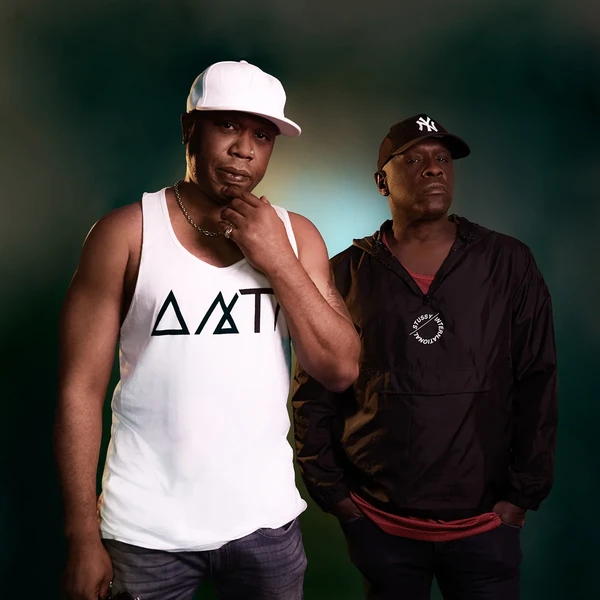
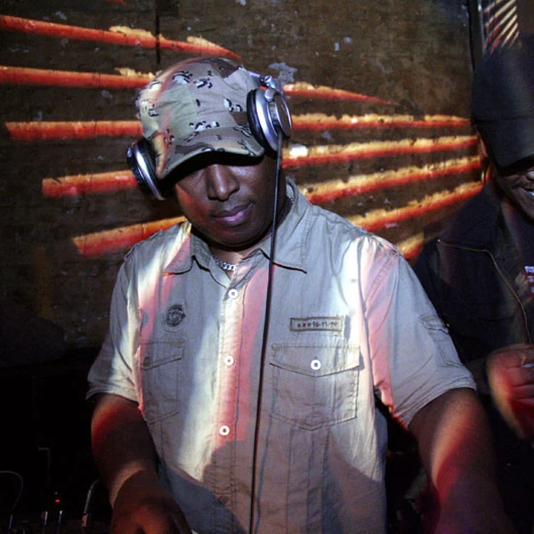
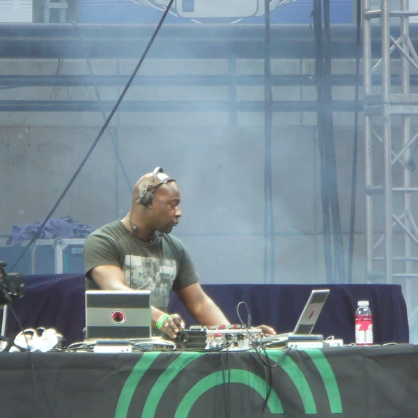
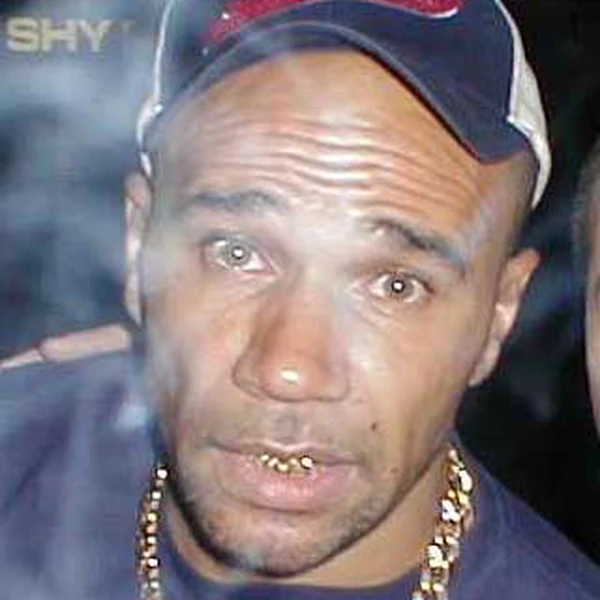
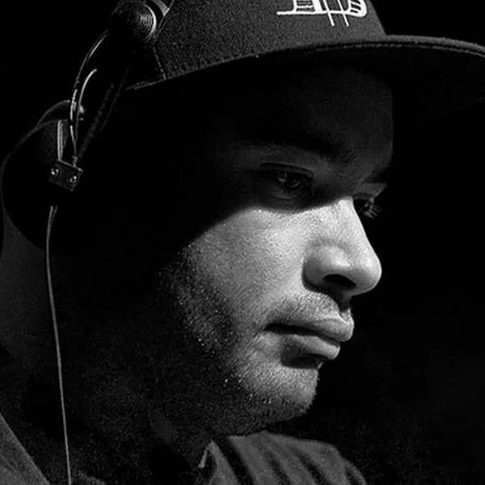

Drum & Bass is a British form of Electronic Dance Music built around fast, sharply edited percussion and deep bass. It grew out of the early 1990s rave scene, especially the music that became known as Jungle. The drums often move at a pace that sounds almost impossibly quick, while the bass provides a slower movement underneath that dancers can follow. This contrast is part of what makes the genre distinctive. Some Drum & Bass is stripped down and forceful, while other styles leave room for detailed melodies or atmospheric textures. It has become an international genre, but its foundations lie in British club culture and the influence of Jamaican sound systems. Jungle and Drum & Bass are closely related, and the distinction between them has shifted over time. Anyone hoping for an agreed dividing line is likely to be disappointed. The music has always developed faster than the arguments about what to call it.
The name Drum & Bass is unusually straightforward. It points to the two elements that most clearly hold the music together. The phrase was already used in dance music long before it became a recognised genre label, but it gained a more specific meaning as the British Jungle scene changed during the mid-1990s. Some producers and labels preferred Drum & Bass for styles that seemed less tied to the Reggae and ragga influences associated with earlier Jungle. Others continued using both names or treated them as different branches of the same music. The origins of the word Jungle are considerably less settled. Several explanations circulate, including possible connections to Jamaican musical language, but there is no universally accepted account. Debates about the names are not simply technical. They are also bound up with questions of cultural identity, respectability and which parts of the music's history people choose to emphasise.
Drum & Bass emerged from British rave music in the early 1990s, when producers were experimenting with faster sampled breaks and increasingly heavy bass. Breakbeat Hardcore provided part of the framework, but Jamaican Reggae and Dub sound-system traditions were just as important to the music's identity. Jungle brought those influences together in a distinctive British setting, supported by pirate radio, record shops and independent labels. Its rhythms became more intricate as producers learned to slice drum samples into ever smaller pieces. By the middle of the decade, the name Drum & Bass was becoming more common, and the music was developing in several directions. Some producers explored atmospheric arrangements and Jazz influences, while others concentrated on harder bass sounds and tightly controlled percussion. New digital tools made these experiments more precise through the late 1990s and 2000s. The genre spread well beyond Britain, yet Jungle remained an active tradition rather than disappearing when a different label became fashionable. The two histories still overlap, which is probably more accurate than pretending one simply replaced the other.
Drum & Bass typically runs at a fast tempo, often around 160 to 180 beats per minute, but it does not necessarily feel twice as frantic as slower dance music. The bass frequently moves at a more measured pace beneath the drums, leaving dancers more than one way to follow the rhythm. Producers build percussion from sampled breaks or programmed hits, with kicks and snares arranged around quick changes and carefully placed gaps. A tiny shift in a snare or hi-hat can make the whole groove feel different. The bass can be a deep sustained note, a rolling pattern or a heavily processed sound that becomes almost another instrument. Some styles use sparse arrangements to make every drum hit count. Others add long melodic passages and detailed atmospheres. The contrast between busy percussion and spacious low frequencies is more revealing than any checklist of sounds. It also explains why two Drum & Bass tracks can share the same tempo and still feel as though they belong in entirely different rooms.





Drum & Bass was shaped by a multicultural Britain that did not always see itself reflected in mainstream media. Black British and Caribbean sound-system traditions were central to the music, while rave culture brought together people from different backgrounds in clubs and warehouses. Pirate radio gave the scene an outlet when established broadcasters offered little space for it. The stations could be raided for operating without licences, yet they were doing cultural work that the legal airwaves had largely neglected. Jungle and Drum & Bass also complicated the familiar idea that British popular music was mainly a story about guitar bands. The genre developed its own businesses, venues and international networks without having to wait for that story to change. Women contributed as DJs, producers and organisers despite barriers that remained across dance music. As the sound spread, its Black British roots were sometimes left out of more convenient accounts of electronic music history. Remembering those roots is not an optional footnote. They explain how the music came to sound the way it does.